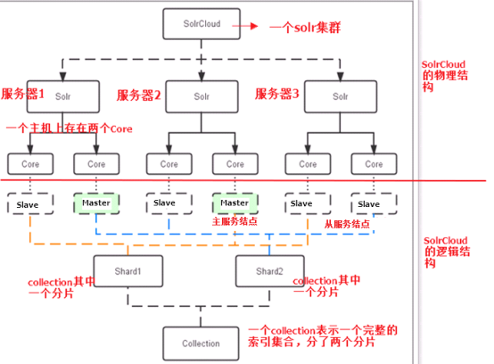
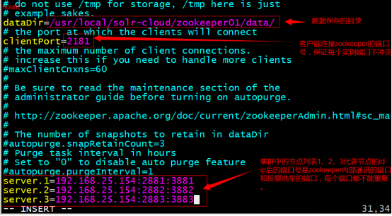
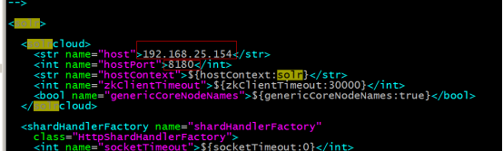
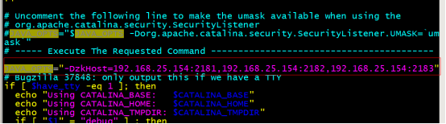
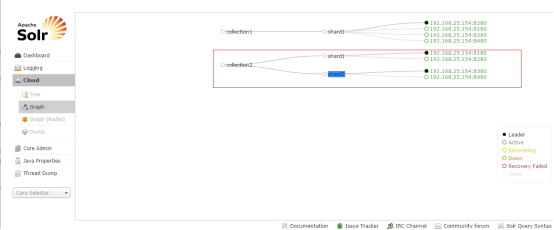
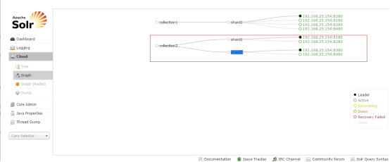

1. 课程计划
1、solr集群搭建
2、使用solrj管理solr集群
2. 什么是SolrCloud
SolrCloud(solr 云)是Solr提供的分布式搜索方案，当你需要大规模，容错，分布式索引和检索能力时使用 SolrCloud。当一个系统的索引数据量少的时候是不需要使用SolrCloud的，当索引量很大，搜索请求并发很高，这时需要使用SolrCloud来满足这些需求。
SolrCloud是基于Solr和Zookeeper的分布式搜索方案，它的主要思想是使用Zookeeper作为集群的配置信息中心。
它有几个特色功能：
1）集中式的配置信息
2）自动容错
3）近实时搜索
4）查询时自动负载均衡
3. Solr集群的系统架构

3.1. 物理结构
三个Solr实例（ 每个实例包括两个Core），组成一个SolrCloud。
3.2. 逻辑结构
索引集合包括两个Shard（shard1和shard2），shard1和shard2分别由三个Core组成，其中一个Leader两个Replication，Leader是由zookeeper选举产生，zookeeper控制每个shard上三个Core的索引数据一致，解决高可用问题。
用户发起索引请求分别从shard1和shard2上获取，解决高并发问题。
3.2.1. collection
Collection在SolrCloud集群中是一个逻辑意义上的完整的索引结构。它常常被划分为一个或多个Shard（分片），它们使用相同的配置信息。
比如：针对商品信息搜索可以创建一个collection。
collection=shard1+shard2+....+shardX
3.2.2. Core
每个Core是Solr中一个独立运行单位，提供 索引和搜索服务。一个shard需要由一个Core或多个Core组成。由于collection由多个shard组成所以collection一般由多个core组成。
3.2.3. Master或Slave
Master是master-slave结构中的主结点（通常说主服务器），Slave是master-slave结构中的从结点（通常说从服务器或备服务器）。同一个Shard下master和slave存储的数据是一致的，这是为了达到高可用目的。
3.2.4. Shard
Collection的逻辑分片。每个Shard被化成一个或者多个replication，通过选举确定哪个是Leader。
3.3. 需要实现的solr集群架构
Zookeeper作为集群的管理工具。
1、集群管理：容错、负载均衡。
2、配置文件的集中管理
3、集群的入口
需要实现zookeeper 高可用。需要搭建集群。建议是奇数节点。需要三个zookeeper服务器。
搭建solr集群需要7台服务器。
搭建伪分布式：
需要三个zookeeper节点
需要四个tomcat节点。
建议虚拟机的内存1G以上。
4. 环境准备
CentOS-6.5-i386-bin-DVD1.iso
jdk-7u72-linux-i586.tar.gz
apache-tomcat-7.0.47.tar.gz
zookeeper-3.4.6.tar.gz
solr-4.10.3.tgz
5. 安装步骤
5.1. Zookeeper集群搭建
第一步：需要安装jdk环境。
第二步：把zookeeper的压缩包上传到服务器。
第三步：解压缩。
第四步：把zookeeper复制三份。
[root@localhost ~]# mkdir /usr/local/solr-cloud
[root@localhost ~]# cp -r zookeeper-3.4.6 /usr/local/solr-cloud/zookeeper01
[root@localhost ~]# cp -r zookeeper-3.4.6 /usr/local/solr-cloud/zookeeper02
[root@localhost ~]# cp -r zookeeper-3.4.6 /usr/local/solr-cloud/zookeeper03
第五步：在每个zookeeper目录下创建一个data目录。
第六步：在data目录下创建一个myid文件，文件名就叫做“myid”。内容就是每个实例的id。例如1、2、3
[root@localhost data]# echo 1 >> myid
[root@localhost data]# ll
total 4
-rw-r--r--. 1 root root 2 Apr 7 18:23 myid
[root@localhost data]# cat myid
1
第七步：修改配置文件。把conf目录下的zoo_sample.cfg文件改名为zoo.cfg

server.1=10.0.135.131:2881:3881
server.2=10.0.135.131:2882:3882
server.3=10.0.135.131:2883:3883
第八步：启动每个zookeeper实例。
启动
bin/zkServer.sh start
查看zookeeper的状态：
bin/zkServer.sh status
5.2. Solr集群的搭建
第一步：创建四个tomcat实例。每个tomcat运行在不同的端口。8180、8280、8380、8480
第二步：部署solr的war包。把单机版的solr工程复制到集群中的tomcat中。
第三步：为每个solr实例创建一个对应的solrhome。使用单机版的solrhome复制四份。
第四步：需要修改solr的web.xml文件。把solrhome关联起来。
第五步：配置solrCloud相关的配置。每个solrhome下都有一个solr.xml，把其中的ip及端口号配置好。

第六步：让zookeeper统一管理配置文件。需要把solrhome/collection1/conf目录上传到zookeeper。上传任意solrhome中的配置文件即可。
使用工具上传配置文件：/root/solr-4.10.3/example/scripts/cloud-scripts/zkcli.sh 需要先将solr的压缩包上传
./zkcli.sh -zkhost 10.0.135.131:2181,10.0.135.131:2182,10.0.135.131:2183 -cmd upconfig -confdir /usr/local/solr-cloud/solrhome01/collection1/conf -confname myconf
查看zookeeper上的配置文件：
使用zookeeper目录下的bin/zkCli.sh命令查看zookeeper上的配置文件：
[root@localhost bin]# ./zkCli.sh
[zk: localhost:2181(CONNECTED) 0] ls /
[configs, zookeeper]
[zk: localhost:2181(CONNECTED) 1] ls /configs
[myconf]
[zk: localhost:2181(CONNECTED) 2] ls /configs/myconf
[admin-extra.menu-top.html, currency.xml, protwords.txt, mapping-FoldToASCII.txt, _schema_analysis_synonyms_english.json, _rest_managed.json, solrconfig.xml, _schema_analysis_stopwords_english.json, stopwords.txt, lang, spellings.txt, mapping-ISOLatin1Accent.txt, admin-extra.html, xslt, synonyms.txt, scripts.conf, update-script.js, velocity, elevate.xml, admin-extra.menu-bottom.html, clustering, schema.xml]
[zk: localhost:2181(CONNECTED) 3]
退出：
[zk: localhost:2181(CONNECTED) 3] quit
使用以下命令连接指定的zookeeper服务：
./zkCli.sh -server 10.0.135.131:2183
第七步：修改tomcat/bin目录下的catalina.sh 文件，关联solr和zookeeper。
把此配置添加到配置文件中：
JAVA_OPTS="-DzkHost=10.0.135.131:2181,10.0.135.131:2182,10.0.135.131:2183"

第八步：启动每个tomcat实例。要包装zookeeper集群是启动状态。
第九步：访问集群

第十步：创建新的Collection进行分片处理。
http://10.0.135.131:8180/solr/admin/collections?action=CREATE&name=collection2&numShards=2&replicationFactor=2
 

第十一步：删除不用的Collection。
http://10.0.135.131:8180/solr/admin/collections?action=DELETE&name=collection1

6. 使用solrJ管理集群
6.1. 添加文档
使用步骤：
第一步：把solrJ相关的jar包添加到工程中。
第二步：创建一个SolrServer对象，需要使用CloudSolrServer子类。构造方法的参数是zookeeper的地址列表。
第三步：需要设置DefaultCollection属性。
第四步：创建一SolrInputDocument对象。
第五步：向文档对象中添加域
第六步：把文档对象写入索引库。
第七步：提交。
@Test
public void testSolrCloudAddDocument() throws Exception {// 第一步：把solrJ相关的jar包添加到工程中。
// 第二步：创建一个SolrServer对象，需要使用CloudSolrServer子类。构造方法的参数是zookeeper的地址列表。
//参数是zookeeper的地址列表，使用逗号分隔
CloudSolrServer solrServer = new CloudSolrServer("10.0.135.131:2181,10.0.135.131:2182,10.0.135.131:2183");// 第三步：需要设置DefaultCollection属性。
solrServer.setDefaultCollection("collection2");// 第四步：创建一SolrInputDocument对象。
SolrInputDocument document = new SolrInputDocument();
// 第五步：向文档对象中添加域
document.addField("item_title", "测试商品");document.addField("item_price", "100");document.addField("id", "test001");// 第六步：把文档对象写入索引库。
solrServer.add(document);
// 第七步：提交。
solrServer.commit();
}
6.2. 查询文档
创建一个CloudSolrServer对象，其他处理和单机版一致。
7. 把搜索功能切换到集群版
<?xml version="1.0" encoding="UTF-8"?>
<beans xmlns="http://www.springframework.org/schema/beans"
xmlns:context="http://www.springframework.org/schema/context" xmlns:p="http://www.springframework.org/schema/p"
xmlns:aop="http://www.springframework.org/schema/aop" xmlns:tx="http://www.springframework.org/schema/tx"
xmlns:xsi="http://www.w3.org/2001/XMLSchema-instance"
xsi:schemaLocation="http://www.springframework.org/schema/beans http://www.springframework.org/schema/beans/spring-beans4.2.xsd
http://www.springframework.org/schema/context http://www.springframework.org/schema/context/spring-context4.2.xsd
http://www.springframework.org/schema/aop http://www.springframework.org/schema/aop/spring-aop4.2.xsd http://www.springframework.org/schema/tx http://www.springframework.org/schema/tx/spring-tx4.2.xsd
http://www.springframework.org/schema/util http://www.springframework.org/schema/util/spring-util4.2.xsd">
<!-- 单机版solr服务配置 -->
<!-- <bean id="httpSolrServer" class="org.apache.solr.client.solrj.impl.HttpSolrServer">
<constructor-arg name="baseURL" value="http://10.0.135.131:8080/solr"></constructor-arg>
</bean> -->
<!-- 集群版solr服务 -->
<bean id="cloudSolrServer" class="org.apache.solr.client.solrj.impl.CloudSolrServer">
<constructor-arg name="zkHost" value="10.0.135.131:2181,10.0.135.131:2182,10.0.135.131:2183"></constructor-arg>
<property name="defaultCollection" value="collection2"></property>
</bean>
</beans>